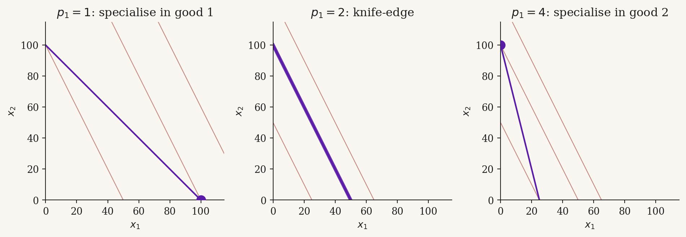

Perfect Substitutes
A consumer chooses a bundle \((x_1, x_2) \in \mathbb{R}^2_+\) of two goods to maximise utility subject to a budget constraint. When the goods are perfect substitutes, the consumer treats them as interchangeable at a fixed rate. This module derives the demand correspondence, traces out the comparative statics in \((p_1, p_2, m)\), and works through one numerical example.
The model
NoteDefinition: Perfect-substitutes utility
Goods \(1\) and \(2\) are perfect substitutes if preferences are represented by \[ u(x_1, x_2) = a x_1 + b x_2, \qquad a, b > 0. \] The marginal rate of substitution is constant and equal to \(a/b\).
The consumer’s problem is \[ \max_{x_1, x_2 \ge 0} \; a x_1 + b x_2 \quad \text{s.t.} \quad p_1 x_1 + p_2 x_2 \le m, \tag{1}\] with \(p_1, p_2 > 0\) and \(m > 0\).
Because the objective is linear in \((x_1, x_2)\), indifference curves are straight lines with slope \(-a/b\). The budget line has slope \(-p_1/p_2\). The solution depends entirely on which slope is steeper.
Solving the problem
The Lagrangian approach is unhelpful here — the optimum is a corner solution except on a knife-edge. Compare the marginal utility per rupee on each good: \[ \frac{a}{p_1} \;\; \text{vs.} \;\; \frac{b}{p_2}. \]
ImportantProposition: Demand correspondence
The demand correspondence for the perfect-substitutes problem is \[ (x_1^*, x_2^*) = \begin{cases} \bigl(\dfrac{m}{p_1},\; 0\bigr) & \text{if } \dfrac{a}{p_1} > \dfrac{b}{p_2}, \\[1em] \bigl(0,\; \dfrac{m}{p_2}\bigr) & \text{if } \dfrac{a}{p_1} < \dfrac{b}{p_2}, \\[1em] \bigl\{(x_1, x_2) : p_1 x_1 + p_2 x_2 = m,\; x_1, x_2 \ge 0\bigr\} & \text{if } \dfrac{a}{p_1} = \dfrac{b}{p_2}. \end{cases} \tag{2}\]
TipProof sketch
Rewrite utility along the budget line. Substituting \(x_2 = (m - p_1 x_1)/p_2\) into \(u\) gives \[ u(x_1) = a x_1 + \frac{b}{p_2}(m - p_1 x_1) = \frac{b m}{p_2} + \left(a - \frac{b p_1}{p_2}\right) x_1. \] This is linear in \(x_1\). The coefficient on \(x_1\) is positive iff \(a/p_1 > b/p_2\), in which case the consumer pushes \(x_1\) to its maximum \(m/p_1\). The coefficient is negative iff \(a/p_1 < b/p_2\), in which case \(x_1 = 0\). When the coefficient is zero, every feasible bundle on the budget line is optimal.
Note that demand is single-valued except on the knife-edge \(a/p_1 = b/p_2\), where it is a correspondence — the entire budget line is optimal.
Comparative statics
Equation Equation 2 makes the comparative statics immediate.
Own-price effects. Holding \((p_2, m, a, b)\) fixed, raising \(p_1\) from a low value to a high one switches the consumer from corner \((m/p_1, 0)\) to corner \((0, m/p_2)\) as \(p_1\) crosses the threshold \(p_1^* = a p_2 / b\). Demand for good 1 falls discontinuously from \(m / p_1^*\) to \(0\).
Cross-price effects. Symmetrically, raising \(p_2\) holding \(p_1\) fixed shifts the consumer from corner \((0, m/p_2)\) to corner \((m/p_1, 0)\) at \(p_2^* = b p_1 / a\).
Income effects. Whichever corner is optimal, income expansion is linear: doubling \(m\) doubles the optimal quantity of the chosen good. Income elasticity is \(1\). Both goods are normal in the (weak) sense that demand never falls with income.
WarningThe kink matters
The discontinuity at \(p_1 = a p_2 / b\) is not a pathology — it is the defining feature of perfect substitutes. A standard Walrasian framework requires demand to be a correspondence rather than a function precisely to accommodate this case.
Worked example
Take \(a = 2\), \(b = 1\), \(p_2 = 1\), \(m = 100\), and let \(p_1\) vary.
The marginal-utility-per-rupee comparison is \[ \frac{2}{p_1} \;\; \text{vs.} \;\; \frac{1}{1} = 1, \] so the consumer specialises in good 1 whenever \(p_1 < 2\) and in good 2 whenever \(p_1 > 2\).
- At \(p_1 = 1\): \(x_1^* = 100\), \(x_2^* = 0\), utility \(= 200\).
- At \(p_1 = 2\): any bundle on the line \(2 x_1 + x_2 = 100\) is optimal; utility \(= 100\) regardless.
- At \(p_1 = 4\): \(x_1^* = 0\), \(x_2^* = 100\), utility \(= 100\).
The demand for good 1 as a function of \(p_1\) is \[ x_1^*(p_1) = \begin{cases} 100 / p_1 & \text{if } p_1 < 2, \\ \text{any value in } [0,\; 50] & \text{if } p_1 = 2, \\ 0 & \text{if } p_1 > 2. \end{cases} \]
A figure illustrating the three regimes is in Section 5.
Figure
Exercises
NoteExercise 1
Show that if \(a = b\) and \(p_1 = p_2\), then every bundle on the budget line yields the same utility. What is that utility as a function of \(m\) and \(p_1\)?
TipSolution
With \(a = b\) and \(p_1 = p_2 \equiv p\), the marginal-utility-per-rupee ratio is \(a/p\) on both goods, so the consumer is indifferent across the budget line. For any feasible \((x_1, x_2)\) with \(p x_1 + p x_2 = m\), we have \(x_1 + x_2 = m/p\) and so \(u = a(x_1 + x_2) = a m / p\).
NoteExercise 2
Suppose \(a = 3\), \(b = 2\), \(m = 60\). Derive the indirect utility function \(v(p_1, p_2, m)\). Verify it is homogeneous of degree zero in \((p_1, p_2, m)\) and decreasing in each price.
TipSolution
The optimum is at one of the two corners. Direct computation gives \[ v(p_1, p_2, m) = \max\left\{ \frac{a m}{p_1},\; \frac{b m}{p_2} \right\} = m \cdot \max\left\{ \frac{a}{p_1},\; \frac{b}{p_2} \right\}. \] Homogeneity of degree zero: scaling \((p_1, p_2, m)\) by \(\lambda > 0\) leaves \(v\) unchanged. Monotonicity: raising \(p_1\) (weakly) decreases the first ratio, hence \(v\) is weakly decreasing in \(p_1\) (strictly, if \(a/p_1 > b/p_2\)).
NoteExercise 3
Sketch the price-offer curve in \((x_1, x_2)\)-space as \(p_1\) varies from \(0\) to \(\infty\) with \(p_2 = 1\) and \(m = 100\). Where are its endpoints? Does it pass through the interior of the budget set?
TipSolution
As \(p_1 \downarrow 0\), \(x_1^* = m/p_1 \to \infty\) and \(x_2^* = 0\), so the curve runs out along the \(x_1\)-axis. As \(p_1\) crosses \(p_1^* = ap_2/b = 2\), the consumer jumps from \((50, 0)\) to \((0, 100)\), and at exactly \(p_1 = 2\) the entire budget line is optimal. For \(p_1 > 2\) the consumer stays at \((0, 100)\). The price-offer curve is therefore the \(x_1\)-axis segment from \((50, 0)\) outward to \(\infty\), plus the budget line at \(p_1 = 2\) from \((50, 0)\) to \((0, 100)\), plus the single point \((0, 100)\). It does not pass through the strict interior of any budget set.
References
- Mas-Colell, Whinston, Green. Microeconomic Theory, Section 3.D.
- Varian. Microeconomic Analysis, Chapter 7.